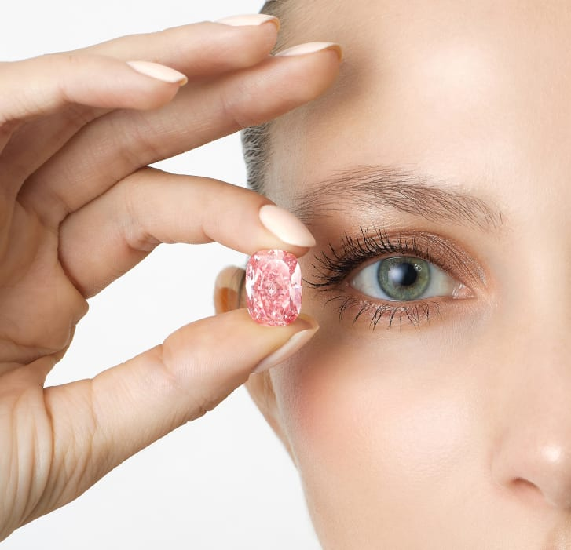

A dazzling pink diamond, described as one of the world's purest, could fetch more than $21 million when it goes under the hammer in Hong Kong in October, auction house Sotheby's said on Wednesday.
At 11.15 carats, the cushion-shaped gem is called "Williamson Pink Star", in tribute to two other pink diamonds.
One is the "CTF Pink Star", a 59.60-carat oval mixed-cut diamond which sold for a record $71.2 million at auction in 2017.
The other is the "Williamson" stone -- a 23.60 carat diamond given to Britain's Queen Elizabeth as a wedding gift by Canadian geologist John Thorburn Williamson. Worn by the monarch in a Cartier brooch, it was discovered in his mine in Tanzania.
The "Williamson Pink Star" also originates from that mine.
"(Pink diamonds) are exceptionally rare in nature...," Kristian Spofforth, Sotheby's head of jewellery, told Reuters at a press preview.
"You then add in the extra factors like it being over 10 carats, internally flawless and Type IIA, and you get right down to the pinnacle," he added referring to a subgroup of the most chemically pure diamonds.
Top quality colored stones are prized by the super wealthy and Spofforth said he expected many bids for the gem when it is offered for sale in a standalone auction on Oct 5.
"We saw over the lockdown crisis and the COVID crisis that there is always demand for the rare and the beautiful in the world, and this is something exceptionally rare that I think will have plenty of bidders on the day," he said.
Ahead of the auction, the "Williamson Pink Star" will go on tour to Dubai, Singapore and Taipei before arriving in Hong Kong.
.............................